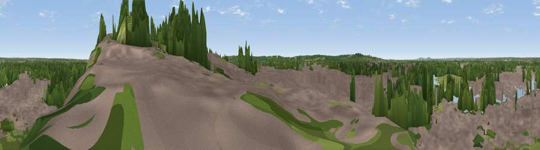

Viewpoint near Eton
#39765 in England · top 39% of its area beats it · near EtonThe view, rendered

A 360° render of this exact spot computed from the terrain model, tree cover and land cover — summer colours, afternoon light, calibrated against photographs of famous viewpoints. Real trees, hedges and buildings will differ in detail.
The panorama
Grey silhouette: terrain skyline in each direction (720 bearings, Earth curvature and refraction included). Dashed green: skyline with trees (+15 m) and buildings (+8 m) as obstacles. Blue strip: how far the ground is visible on each bearing.
Where the view opens
Wedge length = distance to the farthest visible ground on that bearing (vegetation-aware). Rings at 10, 25 and 50 km.
What fills the view
55% built-up · 21% grassland · 15% woodland · 8% water ·
Angular shares of the visible panorama (visual magnitude), not map area. Landscape diversity 0.51 (0–1 Shannon).
Key numbers
More beautiful places nearby
The staircase of upgrades: each row has a higher view potential than everything closer. Driving times are estimates from straight-line distance, calibrated against real road routing — check an actual route before setting out.
| Place | Direction | Drive | Score |
|---|---|---|---|
| Windsor Castle | E · 0 km | ~1 min | 53.3 |
| Viewpoint near Bishopsgate | SSE · 5 km | ~11 min | 53.6 |
| Fultness Wood Hill | NW · 13 km | ~25 min | 57.8 |
| Harrow on the Hill | ENE · 21 km | ~36 min | 60.7 |
| Viewpoint near Guildford | S · 28 km | ~45 min | 65.4 |
| Viewpoint near Compton | S · 29 km | ~45 min | 66.7 |
| Brush Hill | NNW · 30 km | ~47 min | 67.9 |
| Viewpoint near Kingston Blount | NW · 31 km | ~48 min | 70.1 |
51.48390, -0.60783 · source: osm viewpoint · position refined by local search. Computed location — check access rights before visiting.